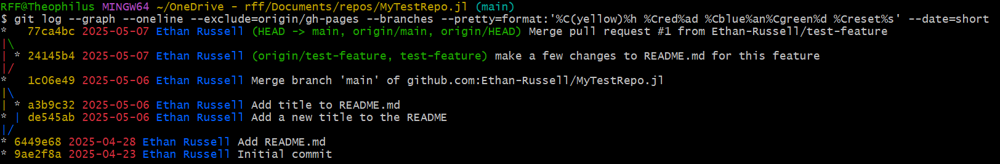

Tips and FAQ
1 FAQ
What types of files can I store in my repository?
In general, git works well with:
Small files. It is not advisable to store large data files in git, because it makes the repository large and subsequent operations get slow and unwieldy. For storing large files, see the Storage Options section
Human-readable files. One of the biggest perks of version control is the ability to see specific changes to files. That feature only works for files composed of human-readable characters, examples of which include comma-separated values (.csv) and plain text (.txt), as well as source code. However, there are some commonly-used filetypes that are not human-readable, and thus do not work very well with version control, including:
- Any Microsoft office format (.docx, .xlsx, .pptx, etc.)
- MATLAB notebooks (.mlx)
What if there is a file in my local repository that I don’t want in the remote repository?
Great question! If I may want to add that file to the repository later, I could simply avoid staging it for current commit, and stage it when it is ready later. If that file or folder should never be tracked, you can also create a file called .gitignore in the repository.
Learn more about .gitignore files.
What if I don’t have anyone who can review my code or pull request?
The importance and benefits of code review was presented in the Software Quality section of the guidance <TODO: LINK TO SUBSECTION>. If you don’t have anyone working on a project with you who is available to review your code, feel free to reach out to <TODO: figure out if this is something we can support>
2 Tips
2.1 Commit Messages
If you want to learn to write better commit messages, this is a great resource!
2.2 .gitignore Files
Git provides us with the option of including a file that specifies files, filetypes, or folders, to automatically exclude from version control. Files covered by the .gitignore file will not show up when you check the git status, but they may still be manually added and committed. These .gitignore files can be life-savers, preventing the user from accidentally committing large files, which can create problems down the road.
Inside the file is simply the names of the file(s), folder(s), or file extension types (i.e. *.log) that Git will ignore. Generally, it is good to ignore files/folders that get automatically generated by existing scripts, are too big for Git, or are not relevant to other users of the repository. Here are some examples of files that you may consider adding to a .gitignore file:
- a folder containing intermediate data files
- a folder containing dependencies that get downloaded using a script
- a project file created by a code editor
The easiest way to set up a .gitignore file is to select the template corresponding to your desired programming language upon creation of the repository. To add a .gitignore file to an existing repository, you can find the GitHub .gitignore template corresponding to your programming language.
.gitignore template for R, from GitHub’s Website
# History files
.Rhistory
.Rapp.history
# Session Data files
.RData
.RDataTmp
# User-specific files
.Ruserdata
# Example code in package build process
*-Ex.R
# Output files from R CMD build
/*.tar.gz
# Output files from R CMD check
/*.Rcheck/
# RStudio files
.Rproj.user/
# produced vignettes
vignettes/*.html
vignettes/*.pdf
# OAuth2 token, see https://github.com/hadley/httr/releases/tag/v0.3
.httr-oauth
# knitr and R markdown default cache directories
*_cache/
/cache/
# Temporary files created by R markdown
*.utf8.md
*.knit.md
# R Environment Variables
.Renviron
# pkgdown site
docs/
# translation temp files
po/*~
# RStudio Connect folder
rsconnect/We also recommend appending any output file types that can grow large to the .gitignore file. For example, you could append the following to your .gitignore file:
# Output File Types
*.svg
*.csv
*.xlsx2.3 Branch Naming
Here is a great resource for learning more about branch naming conventions.
2.5 Aliases
An Alias is like creating a shortcut for a git command so that you don’t have to type out the whole command.
For example, we type git status fairly often and it would be nice to simply type git st. We can tell Git that we want to create an alias called git st that simply executes git status instead. Here is how we tell Git Bash to save that into its configuration file.
git config --global alias.st statusCommit Message Alias
This alias makes it easier to type a commit message without opening notepad.
Setup
git config --global alias.cm 'commit -m'Usage
git cm "Commit message here"Tree Visualization
Git Bash offers tools to visualize commits/branches. Usually these are based on the command git log, which has many different options for customization. Below is a customized git log command that is nicely color-coded, shows user, date, and commit message.
git log --graph --oneline --exclude=origin/gh-pages --branches --pretty=format:'%C(yellow)%h %Cred%ad %Cblue%an%Cgreen%d %Creset%s' --date=short
As you can see, it prints the commit hash, the date of the commit, the author, the name of the branch, and the commit message, as well as the branching structure at the far left.
Setup
To make an alias for it with the name tree, enter the following command in Git Bash:
git config --global alias.tree "log --graph --oneline --exclude=origin/gh-pages --branches --pretty=format:'%C(yellow)%h %Cred%ad %Cblue%an%Cgreen%d %Creset%s' --date=short"Usage
Now, to print the visualization, simply enter:
git tree
git tree -10 # this option makes it only print the latest 10 commits.